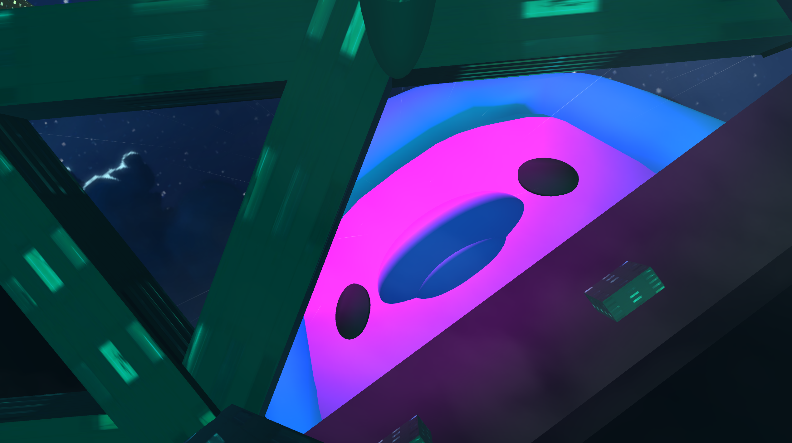
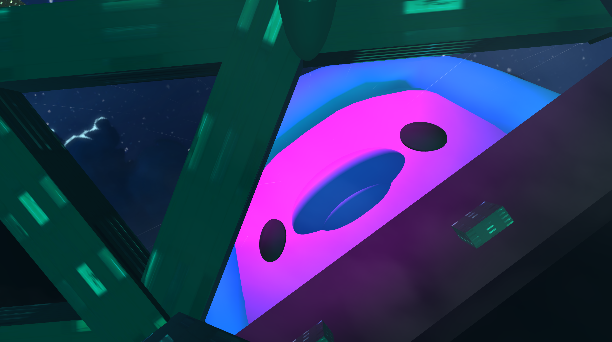
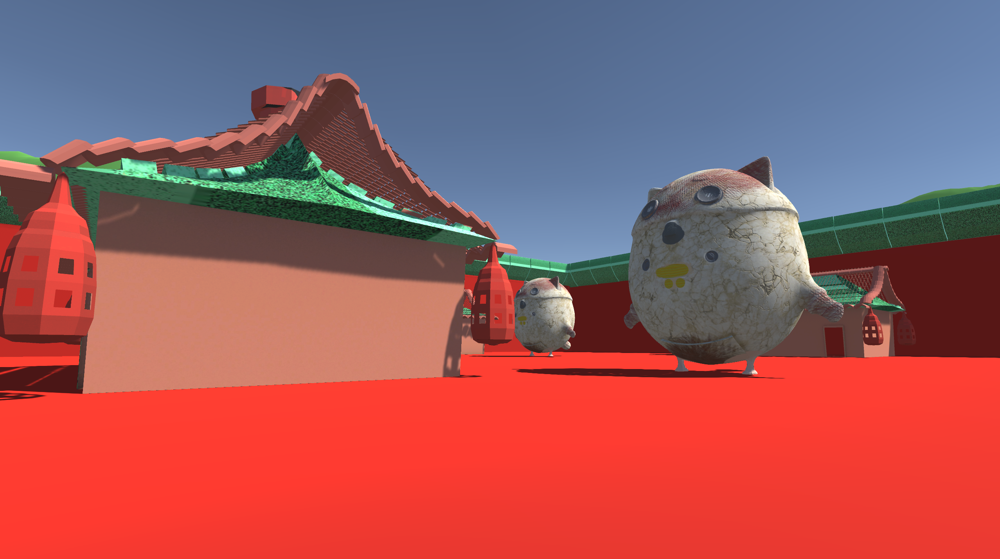
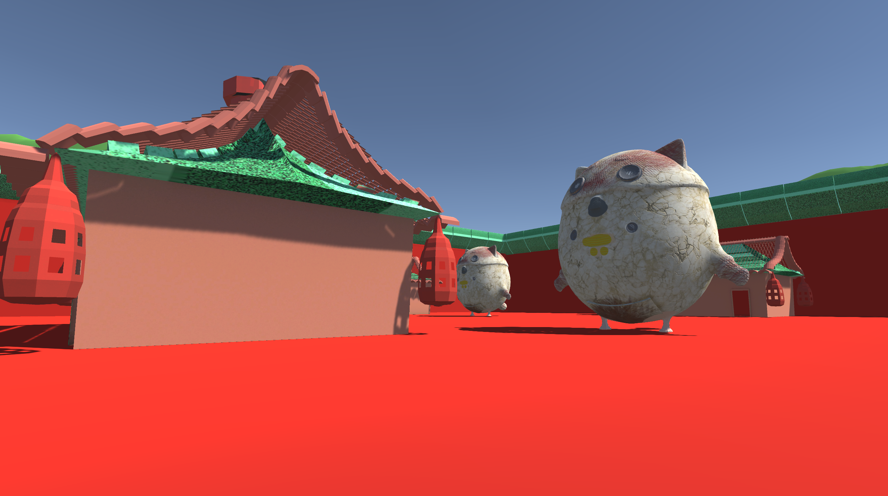
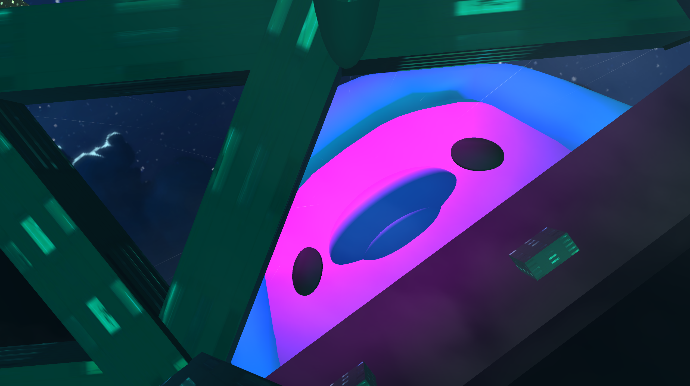
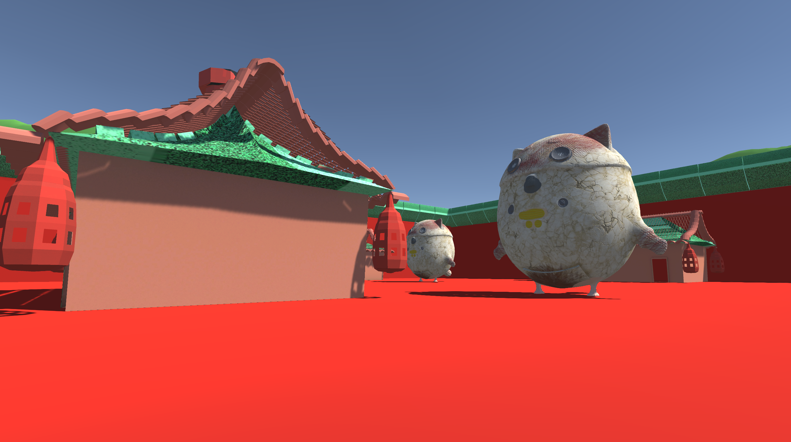

 

The Nuggets is a group collaborative project where each of our team members recreated some of our
favorite films but as if they were filmed with chickens! Everyone used my chicken model as the base for their
characters.
Created with: Blender, Unity, Adobe CC
Click here for download.


We were inspired by cartoons and comic humor, we aimed for a simple yet funny retelling of movies such as Blade Runner, My Neighbor Totoro, Howl's Moving Castle, and Turning Red. Aesthetically, we worked with a low poly (but shaded smooth) and simple colors/materials. Using Unity, we linked each of these movies by pathways that lead to a portal directing to the next.
Catbus and Totoro Chicken Model
Combined build that I used for a base in Unity.